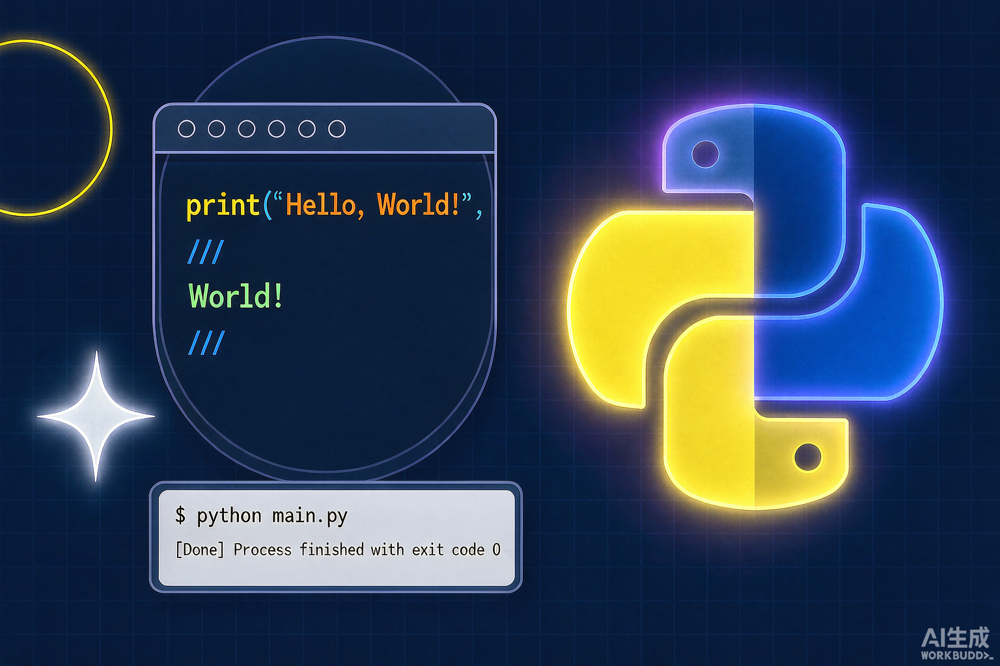

云计算入门：IaaS、PaaS、SaaS 到底差在哪？
用「自己盖房、租毛坯、住酒店」的比喻讲清三种云服务模型，附学习路线图。
📅 2026-10-20 · 阅读 5 min
每一篇文章，都是一次打怪升级
用「自己盖房、租毛坯、住酒店」的比喻讲清三种云服务模型，附学习路线图。
镜像、容器、仓库三件套速通，记录第一次 docker run 踩过的坑。

从拓扑搭建、VLAN 划分到 Trunk 配置，一步步截图记录实验全过程。
在 eNSP 里同时配两种方案做对比，理解路由表的生成逻辑。

用画图的方式理解指针与内存，配 5 道入门小练习。

为什么选纯静态 HTML？从设计稿到上线，一个页面一个页面手搓的记录。